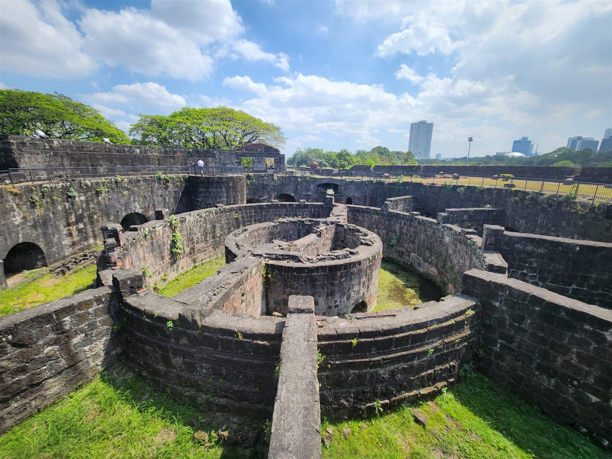
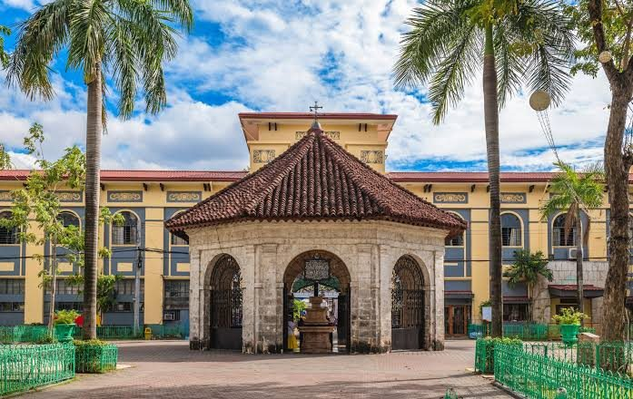

Built in 1571 atop the former palisaded stronghold of Rajah Sulayman, this stone citadel guarded the entrance to the Pasig River for centuries. National hero José Rizal spent his final days here writing Mi Último Adiós before his 1896 execution, turning these walls into a symbol of Filipino sacrifice and freedom.

Baluarte de San Diego
Manila
Designed by Jesuit priest Antonio Sedeño between 1586 and 1587, this circular stone bastion defended Manila’s southern bay. Its ace-of-spades walls endured British cannon fire in 1762 and the 1945 Battle of Manila; today, it stands as a quiet garden reminder of the city’s resilience.

Magellan’s Cross
Cebu
Planted in 1521 by Portuguese explorer Ferdinand Magellan upon arriving in Cebu, this wooden cross marks the baptism of Rajah Humabon, Queen Juana, and hundreds of Cebuanos. Housed in a stone pavilion, it represents a pivotal moment that reshaped Philippine identity.
China
3 historic landmarks
Great Wall of China
Northern China
Stretching across rugged mountain ridges for over 21,000 kilometers, the wall was built and linked across dynasties to defend northern borders. Soldiers, peasants, and prisoners labored along its watchtowers, turning a military barrier into an emblem of Chinese endurance.
The Forbidden City
Beijing
This 980-building complex served as the imperial palace for 24 Ming and Qing emperors from 1420 to 1912. Behind its crimson walls, court scholars, eunuchs, and rulers shaped Chinese statecraft, art, and philosophy.
Terracotta Army
Xi’an
Buried in 210 BC to guard China’s first emperor, Qin Shi Huang, in the afterlife, over 8,000 life-sized clay soldiers, horses, and chariots remained hidden until farmers discovered them in 1974. Each warrior carries unique facial features modeled after real imperial troops.